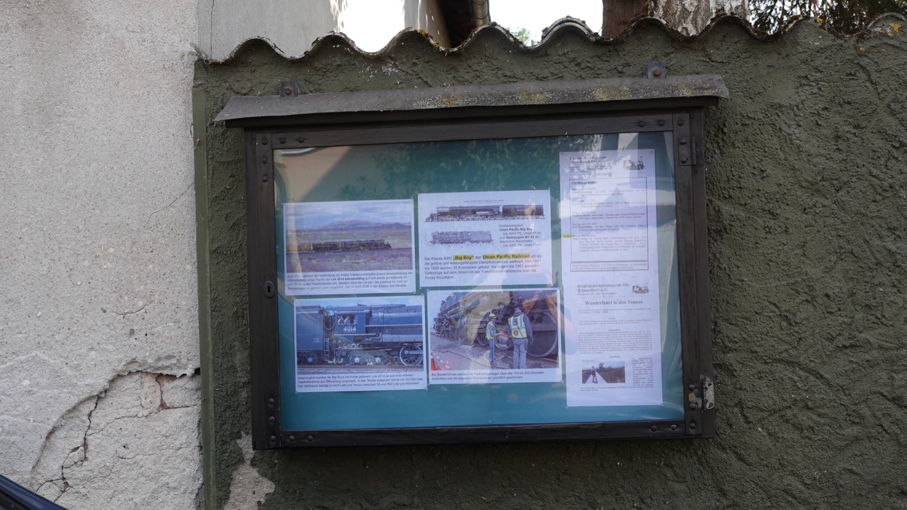

Der Verein
Über uns
Die Schienenverkehrsfreunde Ffm.-Schwanheim e. V. – kurz SVS – gingen 1978 aus dem am 6. April 1972 gegründeten „Eisenbahnclub Merkur“ hervor und traten im selben Jahr dem Vereinsring Schwanheim bei. Seitdem verfolgen wir ein Ziel: Mitgliedern und allen Interessierten die Bedeutung des Schienenverkehrs in Geschichte, Gegenwart und Zukunft bewusst zu machen.
Dazu sammeln und bewahren wir historisches Material über Bahnstrecken und Schienenfahrzeuge – Bilder, Dokumente, Erinnerungsstücke –, laden zu Dia-, Film- und Videovorträgen ein und setzen uns für den Erhalt und Ausbau des Schienenverkehrs in der Region ein. Einiges aus dieser Sammlung zeigen wir im Archiv.
Als Mitglied im Bundesverband Deutscher Eisenbahn-Freunde und im Fahrgastverband PRO BAHN unterstützen wir die Bahn als umweltfreundlichstes Verkehrsmittel. Seit Kurzem sind wir außerdem im neu gegründeten Eisenbahnforum Rhein-Main (EFRM) vertreten, einem Zusammenschluss regionaler Bahnvereine.
Das Verkehrsmuseum Frankfurt am Main liegt in Schwanheim und wird deshalb oft mit uns in Verbindung gebracht – Träger sind wir dort allerdings nicht. Betrieben wird es von der Verkehrsgesellschaft Frankfurt (VGF), mitbetreut durch die Historische Straßenbahn der Stadt Frankfurt am Main e. V. (HSF), die wie wir im EFRM Mitglied ist.

Im Ort
Der Schaukasten
In der Schwarzbachstraße 21 hängt seit fünfzig Jahren unser Schaukasten. Andreas Illert gestaltet ihn Monat für Monat neu und sucht dafür jedes Mal ein eigenes Thema aus – gern eines, das auch für Leute interessant ist, die sonst wenig mit der Eisenbahn zu tun haben.
Daneben hängt immer das aktuelle Veranstaltungsprogramm. Wer vorbeigeht, weiß also gleich, wann der nächste Vortrag ansteht.